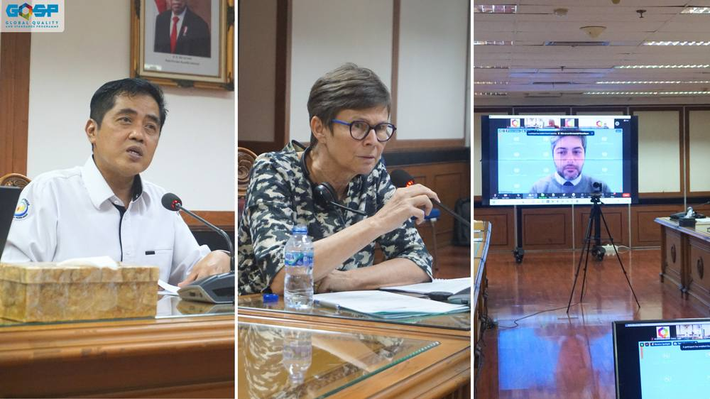
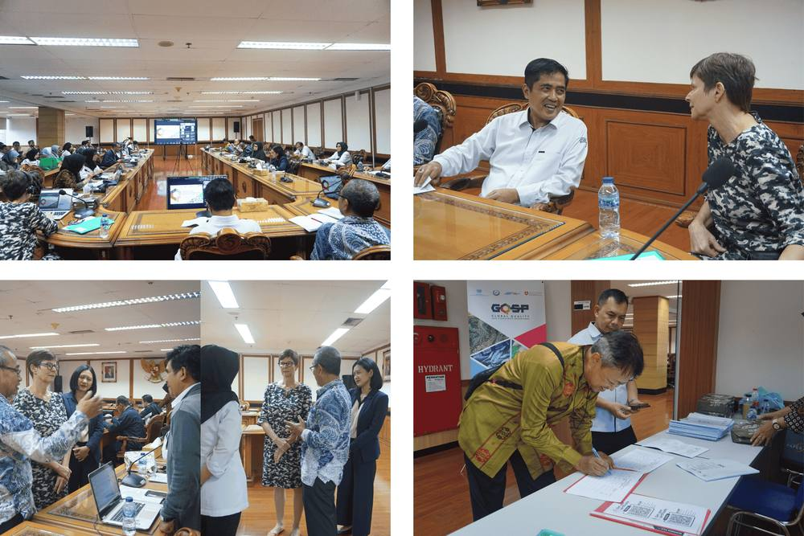

Validation Workshop of GQSP Indonesia Phase 2 Workplan

Jakarta (GQSP Indonesia) - The Validation Workshop for the Global Quality and Standards Programme (GQSP) Indonesia Phase 2 (2023-2026) was held on February 1, 2024, at the Ministry of Marine Affairs and Fisheries (MMAF) in Jakarta. This hybrid workshop marked the completion of the project’s inception phase and the start of the new implementation phase. The event was participated by 66 attendeed from various stakeholders, including representatives from MMAF, the Swiss Economic Cooperation and Development (SECO), UNIDO, the National Standardization Agency (BSN), and various value chain associations and regional offices.
Opening Remarks
The workshop began with opening remarks from key figures. Mr. Nima Bahramalian from UNIDO highlighted the project's key focus areas: improving quality infrastructure, strengthening SME compliance with standards, and fostering a culture of quality in the fisheries sector. He also emphasized the project's efforts toward climate action, particularly through seaweed and integrated shrimp farming.
Ms. Violette Ruppanner of SECO underscored Indonesia's pivotal role in international trade and the importance of quality standards for competitiveness. She reflected on the project's journey, commended the SMART Fish program, and emphasized GQSP Phase 2’s role in supporting sustainable fisheries.
Mr. Budi Sulistyo of MMAF encouraged collaboration and communication between agencies to support the blue economy and improve policy implementation.

Inception Report Highlights
Mr. Sudari Pawiro, GQSP Indonesia’s National Chief Technical Advisor, presented the inception report covering activities from October 2023 to January 2024. The inception phase involved 53 coordination activities and resulted in key milestones, including the validation of interventions, work plan development, identification of pilot locations, and the establishment of new partnerships. The report identified 22 districts in 11 provinces as potential project sites and categorized project activities into six clusters, each aligned with specific partners.
Key intervention areas include:
Improving SME competitiveness and market access.
Enhancing aquaculture productivity and sustainability.
Strengthening the national quality assurance system.
Capacity building and skill development for quality compliance.
Strengthening the national quality infrastructure in partnership with BSN.
Regional synergies within ASEAN and GQSP countries.
The inception phase also introduced several adjustments, including four new activities, five additional districts, and three new key performance indicators (KPIs). The project will aim to improve economic gains for 1,500 value chain actors, increase export value and volume by 15%, and open new markets for assisted firms.
Discussion and Stakeholder Inputs
The participants raised several important points during the discussion. The MMAF’s Directorate General of Aquaculture (DJPB) sought clarity on seaweed modelling in Wakatobi and technical assistance for SMEs and also stressed the importance of location synchronization for project collaboration. The National Standardization Agency (BSN) emphasized the need for harmonization of standards and capacity building.
Associations such as the Indonesian Shrimp Forum and Indonesian Seaweed Industry Association raised concerns about the sustainability of program outputs and intellectual property. They recommended a stable market for new seaweed species and discussed the possibility of seaweed being incorporated into carbon trading.

Closing Remarks
In closing, Ms. Ruppanner reiterated the importance of collaboration and mutual support for achieving the project’s goals, while Mr. Bahramalian highlighted the ambitious targets set for GQSP Phase 2, acknowledging the strong collaboration with MMAF and private sector partners.